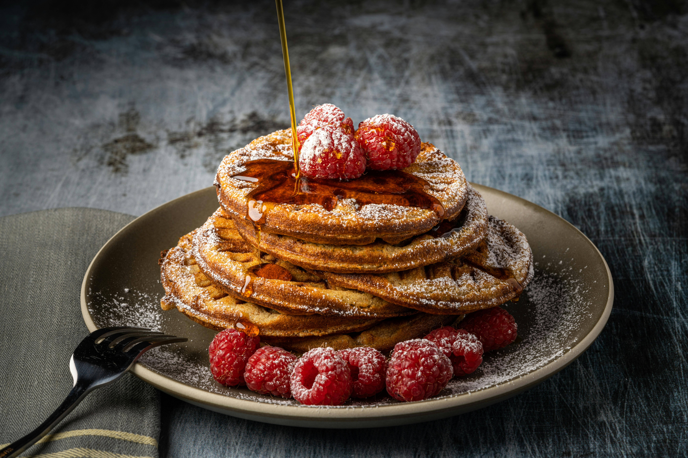

Easy Morning Pancakes
Pancakes

This recipe made by Dakota Kelly is perfect for a early morning on the weekend
Ingredients List
- All-purpose Flour - 1 1/2 Cup
- Baking Powder - 3 1/2 TSP
- White Sugar - 1 TSP
- Salt - 1/4 TSP
- Milk - 1 1/4 Cup
- Butter - 3 TBSP
- Eggs - 1
- Syrup of your choice
Equipment List
- Non-stick Pan
- Spatula
- Strainer
- Whisk
- Mixing Bowl
Cooking Directions
- Sift togethor the Flour, Baking Powder, Sugar, and Salt in the mixing bowl
- Add in the Eggs, Milk, and Butter
- Put batter in pan and flip after approx 2 minutes
- Ensure golden-brown on both sides and serve
This page created as academic activity only.